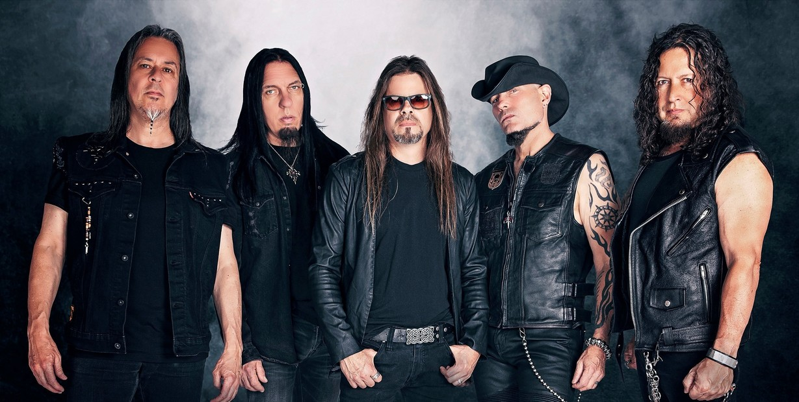
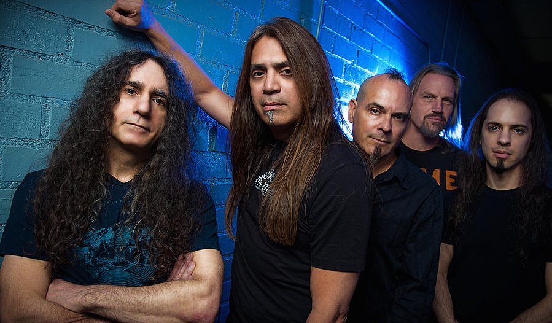
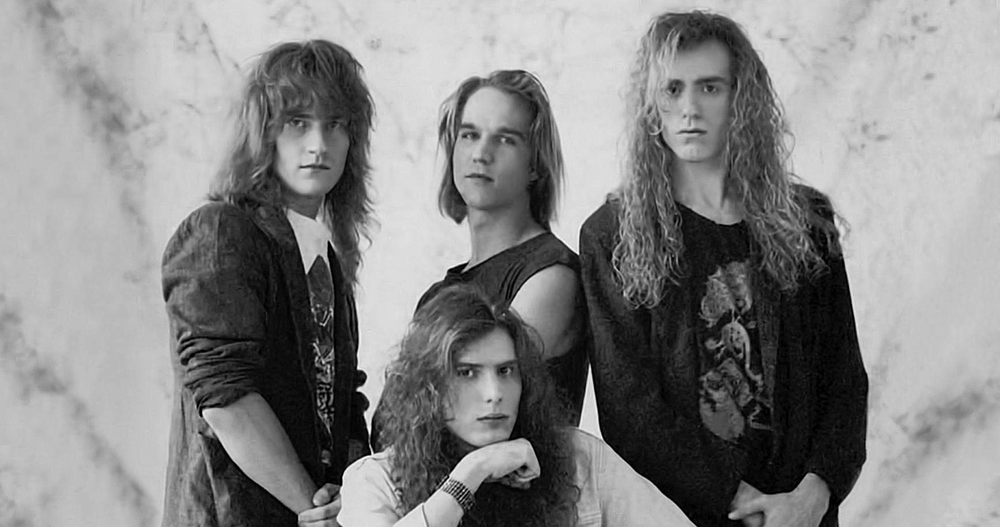
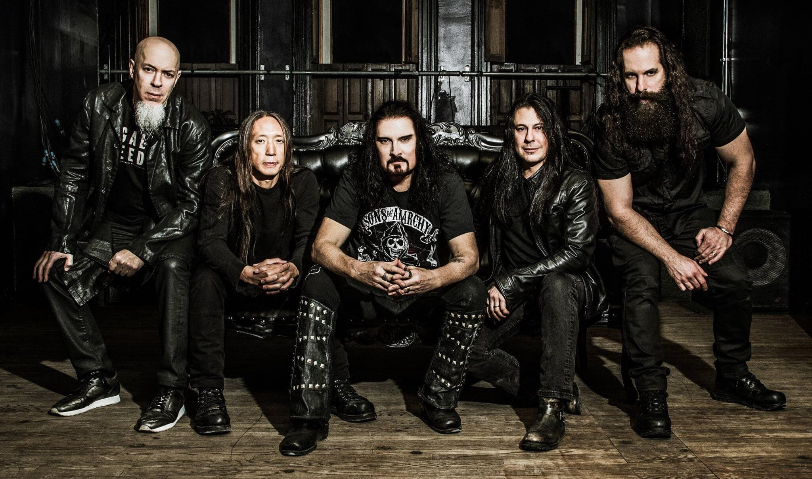
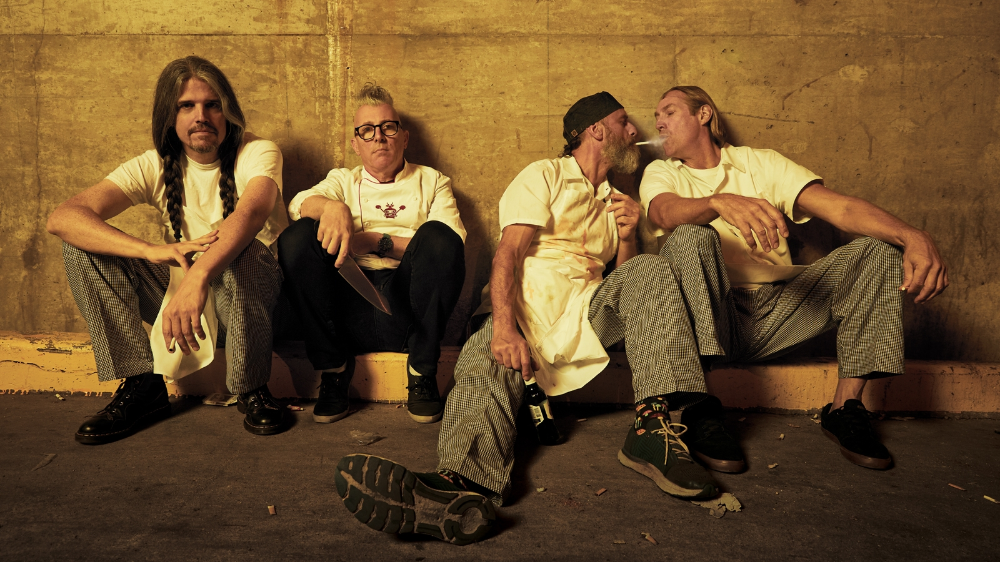
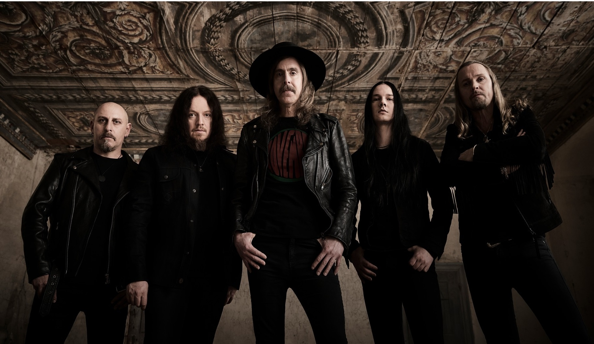

Progressive Metal Bands
About
Top 3 most listened to progressive metal bands of the 80s and 90s.
Ranking of the 80s:
- Queensryche

Band founded in 1978 as Crossfire in Seattle , Washington. The members are Michael
Wilton, Eddie Jackson, Mike Stone, Todd La Torre and Casey Grillo. - Fates Warning

Formed in Hartford, Connecticut, in 1982 by John Arch, Jim Matheos, Victor Arduini,
Joe DiBiase and Steve Zimmerman. - Watchtower>

Band based in Austin, Texas, 1982. The members were Doug Keyser, Rick Colaluca,
Ron Jarzombek and Jason McMaster
Ranking of the 90s:
- Dream Theater

Band formed in New York, United States 1985 by James LaBrie, John Petrucci, John
Myung, Jordan Rudess and Mike Portnoy - Tool

Formed in Los Angeles in 1989. It consists of Danny Carey, Adam Jones, Maynard
James Keenan and Justin Chancellor - Opeth

Band formed in 1990 in Stockholm, Sweden by Mikael Åkerfeldt, Fredrik Åkesson,
Martín Méndez, Waltteri Väyrynen and Joakim Svalberg
Back to the top